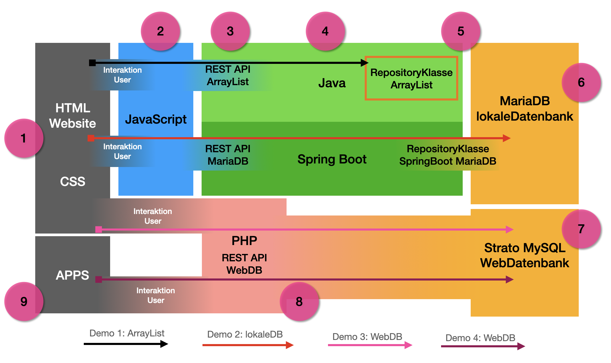

Technische Dokumentation
Hier findest du technische Informationen z.B. über die eingesetzten Technologien,
sowie der Funktionsweise der einzelnen Elemente dieser Website.
Architektur
- HTML/CSS: Für das FrontEnd nutzen wir eine statische HTML Seite. Design-Elemente wurden über eine ausgelagerte CSS-Datei eingebunden. Eng verknüpft mit HTML und CSS sind diverse JavaScript Dateien zur Dynamisierung unserer GUI.
- JavaScript: JavaScript kommt zum Einsatz, um dynamische Inhalte in der statischen HTML Seite darzustellen. Zudem nutzen wir JS um vom Client Requests in Richtung REST API zu stellen und die zurückgelieferten Responses z.B. für Ausgaben auf dem Bildschirm oder Diagramme, aufzugreifen.
- Rest API: In Java/SpringBoot haben wir zwei RESTController geschrieben. Einer dient als Schnittstelle für Abfragen einer ArrayList welche Zahlungen verwaltet. Die Zweite REST Schnittstelle wurde zur Verwaltung von Zahlungen in einer nachgelagerten Datenbank (MariaDB) erstellt.
- JAVA/SpringBoot: Neben den bereits erwähnten REST-Schnittstellen haben wir in Java unser Datenmodell welches durch entsprechende Klassen repräsentiert wird. Zudem wurden auch im Java-Backend die RepositoryKlassen für die ArrayList, und die MariaDB erzeugt, welche unseren geschmeidigen Übergang z.B. um MariaDB, steuern.
- Repository: Die Verwaltung von Zahlungen für die ArrayList findet in Java statt. Die Daten sind aber nur während der Laufzeit des Backends verfügbar. Für die persistente Speicherung haben wir in Java/SpringBoot auch eine Repository Klasse für die MariaDB geschrieben. Über diese kommunizieren wir mit unserer Datenbank.
- MariaDB: Für unsere Applikation dient zur dauerhaften Speicherung eine relationale SQL-Datenbank (MariaDB) welche lokal auf dem Computer (localhost) zur Verfügung steht.
- WebDatenbank: Wir wollten noch eine Stufe weitergehen und haben auch eine Datenbank (MySQL) auf einem WebServer angelegt.
- PHP Rest API: Für die WebDatenbank wurde auch eine REST-Schnittstelle benötigt. Wir haben dies in PHP umgesetzt. Die PHP-REST-API liegt ebenfalls auf dem WebServer und ist unsere Schnittstelle für eine Kommunikation. Dadurch wurde auch außerhalb der vier Wände unseres Computers die Verwaltung von Zahlungen möglich.
- APP/Web-Zugriff: Um die erweiterten Möglichkeiten einer WebDatenbank auf einem WebServer zu demonstrieren haben wir noch ein einfaches iPhone App in Swift/SwiftUI entwickelt, welches auch die Zahlungen aus der WebDatenbank darstellen kann.
REST-API
Java/SpringBoot Backend -lokale Datenbank-
In einer Klasse (ZahlungenController.java) wurden folgende Schnittstellen angelegt:
| REST-Service | URL | Beschreibung |
|---|---|---|
| GET | /zahlungenDB | Rückgabe aller Datensätze aus der lokalen Datenbank. |
| GET | /oneZahlungDB/{id} | Rückgabe des angefragten Datensatzes (ID) aus der lokalen Datenbank. |
| GET | /umsatzDB | Rückgabe der Zahlungseingänge und Zahlungsausgänge aus der lokalen Datenbank. |
| GET | /anzahlDB | Rückgabe Anzahl der Datensätze aus der lokalen Datenbank. |
| GET | /umsatzDB | Rückgabe der Zahlungseingänge und Zahlungsausgänge aus der lokalen Datenbank. |
| GET | /*kategorie*UmsatzDB | Rückgabe von Umsätzen nach Kategorie aus der lokalen Datenbank. |
| POST | /newZahlungDB/ | Erstellen eines neuen Datensatzes in der lokalen Datenbank. |
| DELETE | /deleteZahlungDB/{id} | Löschen des übergebenen Datensatzes (ID) aus der lokalen Datenbank. |
Java/SpringBoot Backend -ArrayList-
In einer Klasse (TransacktionController.java) wurden folgende Schnittstellen angelegt:
| REST-Service | URL | Beschreibung |
|---|---|---|
| GET | /zahlungen/ | Rückgabe aller Datensätze aus der ArrayList. |
| GET | /zahlung/{id} | Rückgabe des angefragten Datensatzes (ID) aus der ArrayList. |
| GET | /info/ | Rückgabe Info über Anzahl Datensätze in der ArrayList. |
| POST | /createTestdata/{anzahl} | Es werden die übergebene Anzahl an Testdaten erzeugt und in der ArrayList abgelegt. |
| POST | /zahlung/ | Erstellen eines neuen Datensatzes in der ArrayList. |
| PUT | /zahlung/{id} | Update des übergebenen Datensatzes (id) in der ArrayList. |
| DELETE | /zahlung/{id} | Löschen des übergebenen Datensatzes (id) aus der ArrayList. |
PHP Webserver Backend
In einer PHP-Datei auf dem Webserver (overview.php) wurden folgende Schnittstellen angelegt:
| REST-Service | URL | Beschreibung |
|---|---|---|
| GET | /overview.php | Rückgabe aller Datensätze aus der Web Datenbank. |
| POST | /add.php | Neuen Datensatz in der Web Datenbank anlegen. |
Da PHP kein direktes Thema der SEA war, haben wir lediglich zum Testen einer REST-Schnittstelle
auf einem Webserver eine GET- und POST-Schnittstelle zum Anzeigen aller Daten aus einer Datenbank auf dem Webserver
erstellt. DELETE, und weitere Schnittstellen haben wir uns an dieser Stelle aus Zeitgründen gespart.